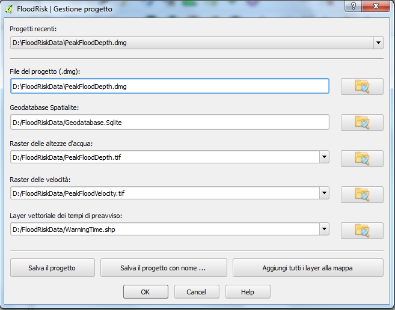

Gestione Progetto¶
La finestra Gestione Progetto consente di gestire la lista dei dati del progetto. Un progetto è il contenitore di tutti le parti che insieme danno la completa rappresentazione dei dati del problema. Sotto è raffigurato un esempio della finesta del progetto con la lista di tutti i file di input.

L’utente deve scegliere il nome del file del progetto(* .dmg): se, prima di aver scelto il nome del file del progetto, viene scelto il Raster delle altezze d’acqua, allora il sistema in automatico suggerisce un nome per il progetto. Il passo successivo consiste nello scegliere tutti i file di input che sono parte del progetto e quindi salvare il progetto cliccando il tasto Salva il progetto. Nel caso in cui si voglia creare una copia del progetto è possibile usare il tasto Salva il progetto con nome .... Cliccando il tasto Aggiungi tutti i layer alla mappa è possibile visualizzare in QGIS i layer che compongono il progetto.